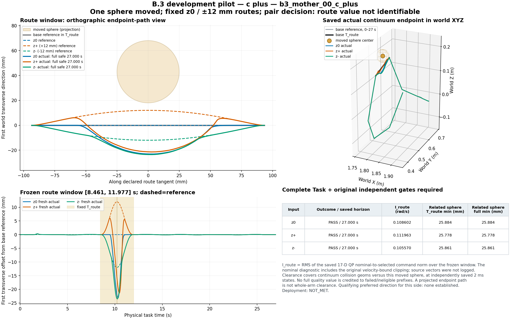
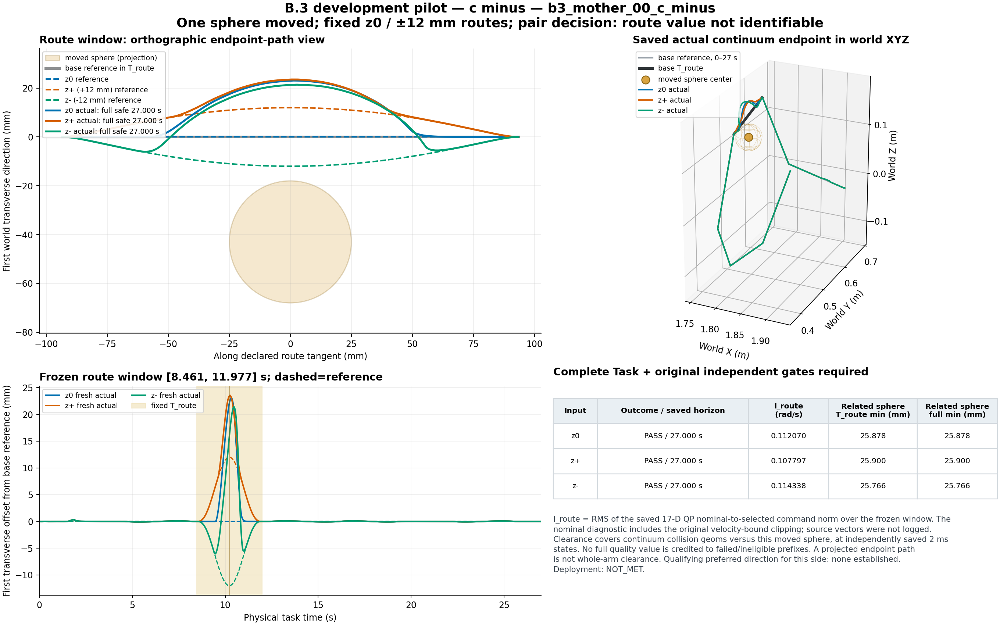

1. 零残差已经足够时，残差是否有可测收益？
b3_mother_00_c_plus较好非零z-相对零残差I_route变化-2.791%；b3_mother_00_c_minus较好非零z+相对零残差I_route变化-3.813%。完整成功记录中未达到冻结的双侧A/B路线价值门槛。安全通过和非零运动变化不能代替可辨识的路线收益。
仅一个开发母场景、两个障碍侧。参考与保存的实际路径分别标示，拒绝前缀止于保存末态；图中投影不替代全连续体碰撞检查。


仅完整 27 s、Task 与原独立门禁全部通过的记录进入完整质量比较。破折号表示未取得相应完整质量值，失败前缀没有补入完整均值。
| 槽位 / 任务 | 候选 | 终态 | 保存时长/s | I_route rad/s | 全任务干预 rad/s | 连续体路径/m | 相关球窗口 最小净空/mm | 相关球全时域 最小净空/mm |
|---|---|---|---|---|---|---|---|---|
PILOT_00b3_mother_00_c_plus | z0 | 完整合格 TASK_COMPLETED | 27.000 | 0.108602 | 0.094601 | 1.1103 | 25.884 | 25.884 |
PILOT_01b3_mother_00_c_plus | z+ | 完整合格 TASK_COMPLETED | 27.000 | 0.111963 | 0.095142 | 1.1177 | 25.778 | 25.778 |
PILOT_02b3_mother_00_c_plus | z- | 完整合格 TASK_COMPLETED | 27.000 | 0.105570 | 0.094076 | 1.1055 | 25.861 | 25.861 |
PILOT_03b3_mother_00_c_minus | z0 | 完整合格 TASK_COMPLETED | 27.000 | 0.112070 | 0.095109 | 1.1103 | 25.878 | 25.878 |
PILOT_04b3_mother_00_c_minus | z+ | 完整合格 TASK_COMPLETED | 27.000 | 0.107797 | 0.094420 | 1.1055 | 25.900 | 25.900 |
PILOT_05b3_mother_00_c_minus | z- | 完整合格 TASK_COMPLETED | 27.000 | 0.114338 | 0.095417 | 1.1177 | 25.766 | 25.766 |
I_route = sqrt(mean(task_avoidance_intervention²))，使用完整预声明关键区间的闭区间 50 Hz 样本。原字段是 17 维 QP 名义速度与实际选中速度差的范数；名义值经过原速度边界裁剪，两个源向量未保存。相关净空仅计算连续体与移动球的几何对，不用 rigid-target 主导的整机最小值替代。
{
"safety": {
"full_complete": true,
"full_task_and_original_safety_passed": true,
"gates": {
"task_requirements": true,
"execution_contract": true,
"independent_interval": true,
"native_geometry": true,
"reference_binding": true
},
"path_quality_comparison_eligible": true,
"historical_runtime_reported_passed": false,
"historical_strict_curve_is_success_gate": false
},
"execution_failure": null,
"evaluation_errors": [],
"metric_unavailable": null,
"failed_prefix_metrics": null
}{
"safety": {
"full_complete": true,
"full_task_and_original_safety_passed": true,
"gates": {
"task_requirements": true,
"execution_contract": true,
"independent_interval": true,
"native_geometry": true,
"reference_binding": true
},
"path_quality_comparison_eligible": true,
"historical_runtime_reported_passed": false,
"historical_strict_curve_is_success_gate": false
},
"execution_failure": null,
"evaluation_errors": [],
"metric_unavailable": null,
"failed_prefix_metrics": null
}{
"safety": {
"full_complete": true,
"full_task_and_original_safety_passed": true,
"gates": {
"task_requirements": true,
"execution_contract": true,
"independent_interval": true,
"native_geometry": true,
"reference_binding": true
},
"path_quality_comparison_eligible": true,
"historical_runtime_reported_passed": false,
"historical_strict_curve_is_success_gate": false
},
"execution_failure": null,
"evaluation_errors": [],
"metric_unavailable": null,
"failed_prefix_metrics": null
}{
"safety": {
"full_complete": true,
"full_task_and_original_safety_passed": true,
"gates": {
"task_requirements": true,
"execution_contract": true,
"independent_interval": true,
"native_geometry": true,
"reference_binding": true
},
"path_quality_comparison_eligible": true,
"historical_runtime_reported_passed": false,
"historical_strict_curve_is_success_gate": false
},
"execution_failure": null,
"evaluation_errors": [],
"metric_unavailable": null,
"failed_prefix_metrics": null
}{
"safety": {
"full_complete": true,
"full_task_and_original_safety_passed": true,
"gates": {
"task_requirements": true,
"execution_contract": true,
"independent_interval": true,
"native_geometry": true,
"reference_binding": true
},
"path_quality_comparison_eligible": true,
"historical_runtime_reported_passed": false,
"historical_strict_curve_is_success_gate": false
},
"execution_failure": null,
"evaluation_errors": [],
"metric_unavailable": null,
"failed_prefix_metrics": null
}{
"safety": {
"full_complete": true,
"full_task_and_original_safety_passed": true,
"gates": {
"task_requirements": true,
"execution_contract": true,
"independent_interval": true,
"native_geometry": true,
"reference_binding": true
},
"path_quality_comparison_eligible": true,
"historical_runtime_reported_passed": false,
"historical_strict_curve_is_success_gate": false
},
"execution_failure": null,
"evaluation_errors": [],
"metric_unavailable": null,
"failed_prefix_metrics": null
}P1 未通过路线价值门槛，因此 P2/P3/P4 按停止规则保持未运行。没有把预留四个任务记为 0/4 失败，也没有依据未运行对照宣布检索或 Diffusion 胜出。
| 组别 | 预声明输入 | 状态 | 完整任务成功数 |
|---|---|---|---|
| Z0 | 零残差 | NOT_RUN_PILOT_STOP | 未评价 |
| R0 | TRAIN 高质量检索 | NOT_RUN_PILOT_STOP | 未评价 |
| U0 | TRAIN 高质量经验抽样 | NOT_RUN_PILOT_STOP | 未评价 |
| D_true | 正确条件 Diffusion | NOT_RUN_PILOT_STOP | 未评价 |
| D_swap | 错配障碍条件 Diffusion | NOT_RUN_PILOT_STOP | 未评价 |
旧 B.2 update250 权重在固定噪声下仅交换障碍条件：16 / 16 对观察到条件响应，原始幅值合法 27 / 32。没有裁剪、替换、重训或新增物理执行。
响应变化不证明路线选择正确。公开旧 TEST 仅用于诊断；本轮没有新模型的真条件、错条件、无条件经验抽样或检索 TEST 比较。
b3_mother_00_c_plus较好非零z-相对零残差I_route变化-2.791%；b3_mother_00_c_minus较好非零z+相对零残差I_route变化-3.813%。完整成功记录中未达到冻结的双侧A/B路线价值门槛。安全通过和非零运动变化不能代替可辨识的路线收益。
b3_mother_00_c_plus: z-；b3_mother_00_c_minus: z+。完整合格非零候选的数值排名随障碍换边反转，但未建立满足冻结门槛的双侧相反有利方向；数值排名与达到可辨识价值门槛分别报告。
未评价新模型的五组TEST。旧权重P0仅观察到条件响应，缺少可信偏好标签，不能据此称正确适应。
本轮没有建立新增Diffusion的收益证据；维持B.2的非学习检索基线，不能将未运行对照写成检索胜出。
当前已建立非学习可执行性见证；瓶颈是路线质量差额不足。优先评估任务区分度以及20mm残差经过安全执行层后的有效作用，再考虑高质量数据与学习方法。本轮停止，不追加障碍搜索、幅值、种子或网络。
| 成本项 | 实测计数 |
|---|---|
| 消耗的 pilot 槽位 | 6 |
| 进入 actual runner 的槽位 | 6 |
| 发生物理步的槽位 | 6 |
| actual 物理步 | 81,000 |
| 私有预演物理步 | 81,000 |
| 独立保存力矩重放步 | 81,000 |
| 私有预演调用 | 8,100 |
| 执行与证据流程原生几何查询 | 201,187,130 |
| 额外路线质量几何查询 | 5,022,372 |
| 输入几何预检查询 | 41,846 |
| 旧状态场景绑定预检查询 | 186 |
| 旧权重诊断 DDIM | 32 |
| teacher actual 槽位 | 0 |
| 新模型 DDIM | 0 |
| 新模型主训练次数 | 0 |
| 新模型 optimizer 更新 | 0 |
| 正式新 TEST actual 槽位 | 0 |
actual、私有预演、独立保存力矩重放分别计费；几何查询不算独立实验。异常前缀成本采用实际 ledger，不用缺失报告字段推定零成本。
| 独立状态 | 报告值 |
|---|---|
research_execution_complete | True |
research_delivery_complete | True |
route_value_identifiable | False |
training_executed | False |
condition_response_observed | True |
conditional_value_supported_in_pilot | False |
advantage_over_retrieval | NOT_EVALUATED |
deployment | NOT_MET |
20 ms 规划、2 ms 物理、27 s 任务、20 mm 残差范围与原控制/安全标准保持。墙钟 20 ms 不作研究门禁；无硬实时、连续时间或模型失配保证。
robot-target 原生 500 Hz；whole-body 50 Hz 边界加配置空间 subdivisions4，不声称所有几何对均在 500 Hz 验证。
{
"costs": {
"actual_physics_steps": 81000,
"private_preview_physics_steps": 81000,
"independent_saved_torque_replay_steps": 81000,
"native_geometry_query_calls": 201187130,
"preview_calls": 8100,
"additional_route_quality_geometry_queries": 5022372,
"input_precheck_geometry_queries": 41846,
"preflight_geometry_binding_check_queries": 186,
"native_geometry_query_calls_by_phase": {
"actual": 98469703,
"independent_torque_replay": 102717427,
"private_preview": 0
},
"actual_slots_consumed": 6,
"actual_runner_entries": 6,
"slots_with_physics": 6,
"old_checkpoint_ddim_calls": 32,
"teacher_actual_slots": 0,
"new_model_ddim_calls": 0,
"new_training_runs": 0,
"optimizer_updates": 0,
"new_TEST_actual_slots": 0,
"count_scope": "actual, private previews and same-torque independent replays are distinct; geometry queries are not independent experiments"
},
"I_route_scope": {
"T_route": "the complete fixed key-slot-2 interval of each task, identically applied to every method",
"sampling": "closed [start,end] 50Hz consumed planning ticks",
"descriptive_input_route_window_string_correction": "route_pair_inputs.protocol says open_endpoints; this plan fixes CLOSED sampling before outcomes; numerical intervals and Task definitions unchanged",
"primary": "sqrt(mean(task_avoidance_intervention**2))",
"producer_scope": "norm of selected 17D QP command minus original Hessian-optimum nominal command after existing velocity-bound clipping; source vectors not logged",
"raw_proposal_minus_selected_used": false,
"local_clearance": "all continuum geoms vs the single moved sphere, fresh saved 2ms states; full task and route window reported separately",
"full_task_and_all_independent_gates_required_for_quality_comparison": true,
"failed_prefix_excluded_from_full_means": true,
"pilot_direction_rule": "minimum I_route among full successful safe nonzero candidates; <=1e-12 absolute I tie is unidentified; preferred must satisfy A or B versus zero or opposite; pair preferred qualifying directions must differ",
"pilot_A": "preferred nonzero full success and zero or opposite fails",
"pilot_B": {
"relative_reduction_min": 0.1,
"absolute_reduction_min_rad_s": 0.001
},
"pilot_negative_stop": "ROUTE_VALUE_NOT_IDENTIFIABLE_WITHIN_CURRENT_REPRESENTATION"
}
}可移植研究报告 · 机器可读 report · 配对指标 · 本页与方法表哈希 · 原两图 manifest · 两图数据
B.2 历史可视化 · V6.2 历史可视化。历史媒体保留各自实验范围。
本轮实际 producer：f5f1687f5ba0b119c91bbc385dfdc841b56d091e
B.2 发布基点：28ef7889be16b4a504d9449f52c50e3a99e82a31
B.2 原算法 producer：7d0a3fd4bd17f41b99b388c30c5ac4897ac4d31d
plan SHA-256：6ed9cd38ac284c9a57ad2bbf03a4b492380c83205fb5db4db81c9a6247922dd1
source identity SHA-256：6a244ea853cf02efd3d452d8afd25339d36cec899691846e64f94d22199f4c0a